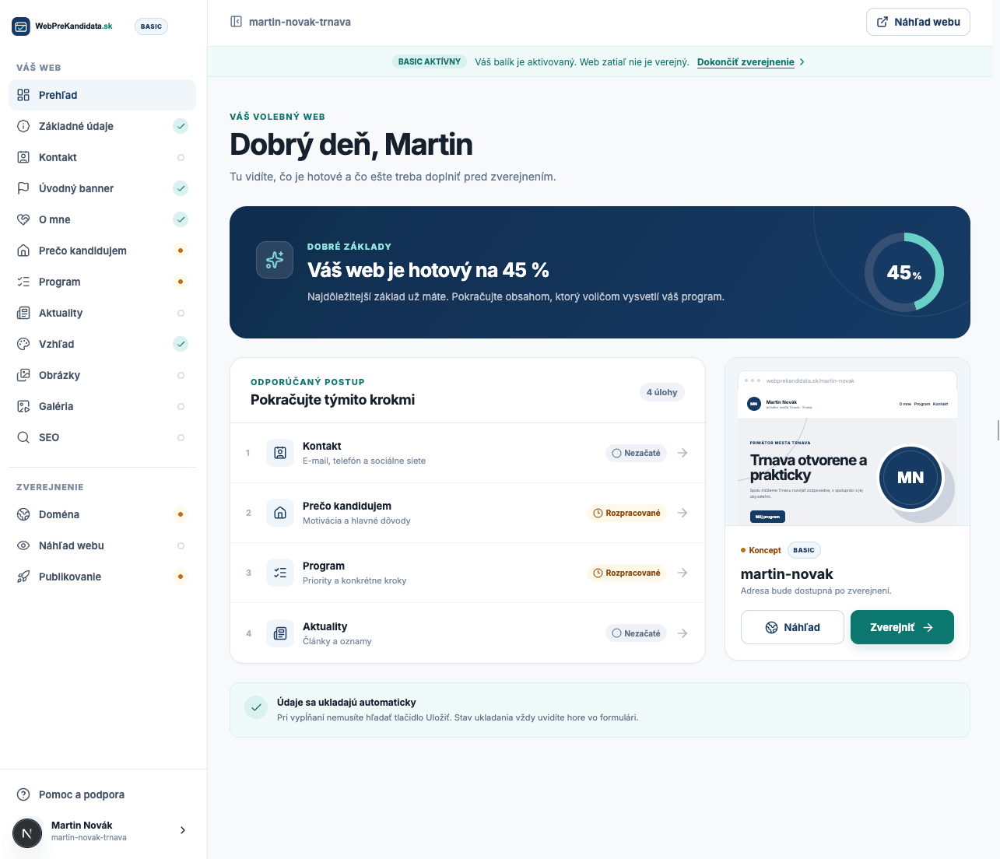
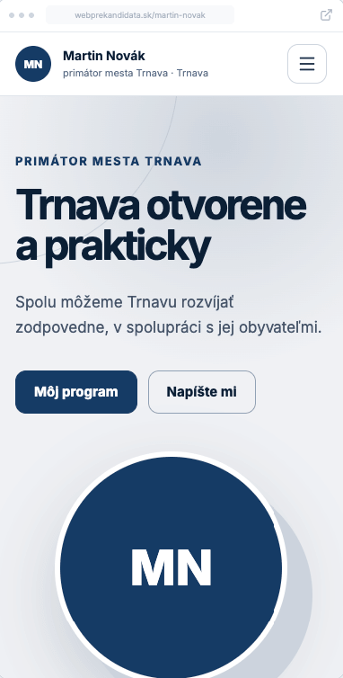

Zadajte údaje o kandidatúre
Doplníte meno, funkciu, obec alebo región, skúsenosti a hlavné priority. Vždy vidíte, čo ešte treba dokončiť.
Web pre komunálne a župné voľby 2026
Vytvoríte si ho jednoducho bez programátora a obsah môžete kedykoľvek upravovať cez prehľadnú administráciu.

Ako vytvoriť volebný web
Platforma vás prevedie obsahom, vzhľadom aj zverejnením. Vy rozhodujete o každom texte, technické nastavenia rieši systém.
Doplníte meno, funkciu, obec alebo región, skúsenosti a hlavné priority. Vždy vidíte, čo ešte treba dokončiť.
AI môže z vašich podkladov navrhnúť úvod, predstavenie a priority. Každý návrh si upravíte a schválite sami.
Súkromný náhľad je zdarma. Keď ste s webom spokojní, vyberiete si balík, zaplatíte a zverejníte ho na vlastnej subdoméne.
Pozrite sa, ako jednoducho sa web spravuje
Upravte si texty, program, aktuality aj vzhľad webu bez programátora. Všetky zmeny spravíte cez prehľadnú administráciu.
Volebná webstránka bez technických starostí
WebPreKandidata.sk je vytvorený pre kandidátov v komunálnych a župných voľbách. Namiesto univerzálneho editora dostanete jasnú štruktúru pre predstavenie, program, aktuality a kontakt.

Pomoc s prvým textom
Napíšte stručne, kto ste, prečo kandidujete a čo chcete riešiť. AI z vašich podkladov pripraví upraviteľný návrh úvodu, predstavenia a najviac troch priorít.
Napíšte pokojne iba stručné body. Pomôžeme vám ich zrozumiteľne rozpracovať.
Férová jednorazová cena
Účet, editor a súkromný náhľad sú zdarma. Jednorazovo zaplatíte až vtedy, keď chcete volebný web verejne zverejniť.
BASIC
PLUS
Nie. Platforma vás prevedie obsahom krok za krokom a vzhľad webu zostane profesionálny automaticky. Nemusíte riešiť kód, hosting ani technické nastavenia.
Áno. Účet, príprava obsahu aj súkromný náhľad sú zdarma. Balík si vyberiete a zaplatíte až vtedy, keď chcete web verejne zverejniť.
Áno. Program, predstavenie, kontakty aj aktuality môžete upravovať v editore. Zmeny sa na verejnom webe zobrazia až po vašom opätovnom publikovaní.
Cena zahŕňa zverejnenie webu, editor, responzívny dizajn, hosting, základné SEO a zdieľanie, aktuality, galériu a verejný e-mailový kontakt. Presný rozsah sa líši podľa balíka Basic a Plus.
Každý publikovaný web dostane adresu na WebPreKandidata.sk. Balík Plus umožňuje pripojiť jednu existujúcu vlastnú doménu; registrácia novej domény nie je zahrnutá v cene.
Nie. AI pomáha iba s formuláciou informácií, ktoré zadáte. Nevymýšľa postoje, sľuby ani fakty a každý návrh pred uložením a zverejnením kontrolujete vy.
Začnite bez platobnej karty
Zaregistrujte sa, doplňte svoje podklady a pozrite si reálny náhľad webu pre svoju kandidatúru.
Vytvoriť web zdarma Bez platobnej karty · Náhľad pred zaplatením